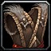

Quests
- A yellow ! over someone's head means they have a quest for you. Click them and press Accept.
- A yellow ? means you can hand in a finished quest there.
- Press L to see your quests. Each one says what to do and where.
- Most of your XP comes from quests, so do every one you find.
Your forms: a different animal for each job
- Night elf form (your normal shape): spells from a distance (Wrath, Moonfire) and all your heals. Uses mana.
- Bear Form (level 10, Shift + 1): lots of armor and health. Uses rage, which fills when you hit or get hit. Your fighting form from 10 to 20, your "this is going badly" form after that, and your tank form in dungeons.
- Cat Form (level 20, Shift + 2): fast attacks, Prowl (sneaking) and Dash. Uses energy and combo points, like a rogue. Your main form from 20 to 60.
- Travel Form (level 30, Shift + 3) to run fast outdoors, and Aquatic Form (Shift + 4) to swim fast and breathe under water.
- Each change costs a bit of mana. Press the same form key again to turn back into a night elf. Changing form also frees you from slows and roots.
- New in WoW: Forever: you can eat, drink, use potions and bandages, talk to people and click quest objects without leaving your form.
Fighting
- Click an enemy to target it. Levels 1–10: cast Wrath and Moonfire from a distance, then hit it with your staff. Levels 10–20: pull with Moonfire, turn into a bear, Maul. From 20: Prowl up to it as a cat.
- Fight one enemy at a time. Pull with Faerie Fire or Moonfire from a distance so its friends don't come along.
- Enemy level colours: grey gives no XP, green is easy, yellow is a fair fight, orange is hard and red means run.
- A golden dragon border on the portrait means elite. Don't fight those alone.
- In trouble? Turn into a bear (bears survive much more), root the enemy with Nature's Grasp and walk away, or Dash away as a cat.
After every fight
- You heal yourself: turn back into a night elf and cast Regrowth or Rejuvenation, then shift back. That's much faster than eating.
- Mana low? Drink water (Alt + 1). You sit down by yourself while drinking. Don't move until the bar is full. Food (Alt + 2) refills health the same way.
- Keep Mark of the Wild and Thorns on yourself all the time (right bar). Their icons show at the top right of your screen.
Getting stronger
- Every 2 levels, cast Teleport: Moonglade (from level 10), learn everything you can afford from Loganaar, then use your Hearthstone to go back. No other class has it this easy.
- Your forms come from quests that start with Mathrengyl Bearwalker in Darnassus: Bear Form at 10, Cure Poison at 14, Aquatic Form at 16 and Cat Form at 20. This guide walks you through each one. Travel Form (30) and Dire Bear Form (40) come from the trainer.
- Every level from 10, press N and spend a talent point. See the Talents tab.
- New spells go into your spellbook (P). The Action Bars tab shows where to put them, form by form.
Your build: Feral, and your dungeon jobs
- This guide levels you as Feral: a cat for damage, a bear when you need to take hits. It's the fastest and safest way to level a druid in WoW: Forever.
- Dungeons before 40: with the same Feral talents you can be the damage (Cat) or the tank (Bear: you keep the enemies on you with Growl, Maul, Swipe and Lacerate). Early dungeons are easy enough that you can also heal in night elf form.
- From level 40: Dual Specialization. A druid trainer teaches you a second talent setup, and you switch between them for free. Make the second one Restoration (healer): groups always need healers. In WoW: Forever druid heals over time stack and can crit, and Restoration gets Wild Growth, which heals the whole group. Or make it a dedicated bear tank. The Equipment Manager swaps your gear with it.
Gear: is this item better?
The colour of an item's name tells you how good it is:
Grey Poor: sell it
White Common: basic
Green Uncommon: a good upgrade
Blue Rare: great, often from dungeons
Purple Epic: the best, from raids
You're wearing
Leather VestChest · Leather60 Armor
vs
You just foundVest of the MonkeyChest · Leather64 Armor+5 Agility+4 Stamina
Better: it has Agility, the stat a cat wants most. Put it on.
- What you can wear: leather armor (cloth too, but leather is better). Druids can't wear mail or plate, or use shields.
- Stats to look for: before level 10, Intellect and Spirit (more mana). From 10, as a bear and a cat: Agility and Strength first (both give attack power; Agility also gives crits and dodging), then Stamina (more health). A little Intellect still helps, for changing form and healing.
- Name endings: green items often end in a word that tells you their stats. of the Monkey (Agility + Stamina), of the Tiger (Strength + Agility) and of the Bear (Strength + Stamina) are great for you.
- Weapons: in WoW: Forever your cat and bear attacks get stronger with a better weapon, so a big two-handed staff, mace or polearm is best. Look at the damage per second number: higher is better. Polearms need training (Woo Ping in Stormwind, from level 20).
- Idols go in the relic slot and give a druid-only bonus. The Aquatic Form quest gives you one.
- How to compare: point at the new item and hold Shift. The game shows what you're wearing right next to it. Right-click an item in your bags to put it on.
- Easy mode: the Pawn addon (see Addons) puts a green arrow on items that are an upgrade for you.
- Quest rewards: when you can pick one, take the one with Agility or Strength. If none fits, take the one that sells for the most.
Getting around
- Talk to the innkeeper in each new town and choose "Make this inn your home". Your Hearthstone then brings you back there.
- Talk to every flight master (the person with a hippogryph or gryphon) you pass, so you can fly there later.
- If you die, you appear as a ghost at a graveyard. Run back to your body and click "Resurrect". As a night elf you're a fast wisp while dead (Wisp Spirit).
- Teleport: Moonglade is like a second Hearthstone: from Moonglade, Sindrayl flies you to any Kalimdor flight path you've unlocked, and Silva Fil'naveth to Darnassus. From level 30, Travel Form is your mount; at 40 you can buy a real one.
- Log out inside an inn to get bonus XP next time.
Addons
Addons are free extras that improve the game's interface. You don't need any, but a few make leveling much easier. The Addons page lists which ones to get (must-have, recommended, optional, and a separate list for dungeons) and how to install them.
Waypoint arrow: with the TomTom addon, click a pin on any Quest Guide map and press Copy /way. In game, press Enter, paste with Ctrl + V and press Enter again. An arrow points the way. /way reset all clears it.
Useful keys
| L | Quest log | M | Map |
| P | Spellbook | N | Talents |
| C | Your character | B | Bags |
| X | Sit down | Y | Legacy (from about level 25) |
The combos to learn
As a bear (levels 10–20, and whenever you need to take hits):
- Pull with Moonfire (or Faerie Fire from level 18).
- Bear Form (Shift + 1), then Enrage for some rage to start with.
- Demoralizing Roar once, then Maul whenever you have the rage. Swipe if two or more enemies fight you.
As a cat (from level 20):
- Prowl and walk up behind the enemy.
- Open with Ravage (from 32) or Pounce (from 36). Before that, Rake or Shred.
- Claw (or Shred from behind) until you have 4 or 5 combo points.
- Rip on a strong enemy, Ferocious Bite on a weak one. Low on energy at 40+? Shifting Power.
- After the fight: night elf form, Regrowth, back to Cat Form.